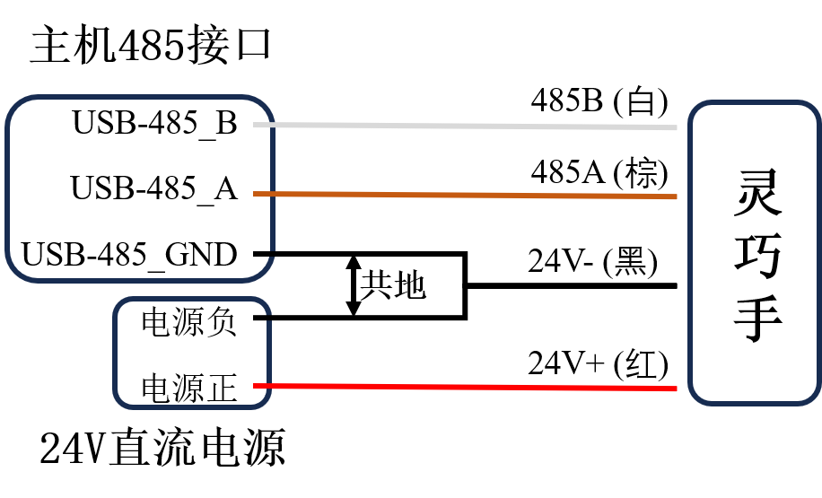
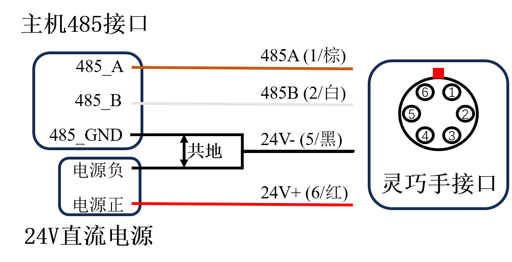
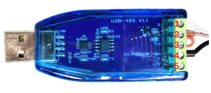
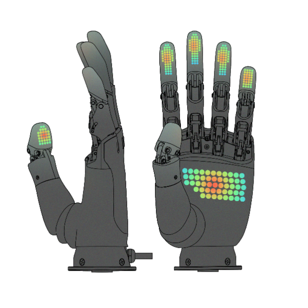

ROHand 灵巧手问答

硬件
1. 问：ROHand如何接线？
答: ROHand从手腕处引出一根四芯线，颜色定义为：
| 线色 | 端子定义 |
|---|---|
| 红色 | 电源24V+ |
| 黑色 | 电源24V- |
| 棕色 | RS485_A/CAN_L |
| 白色 | RS485_B/CAN_H |
重要事项: 当主机和灵巧手供电电源不为同一电源时，需要将灵巧手和主机进行共地处理，具体做法为将电源负和USB转485模块的GND短接。

与机械臂链接 (如 RM65):
| 序号 | 颜色 | 端子定义 |
|---|---|---|
| 1 | 棕色 | RS485_A |
| 2 | 白色 | RS485_B |
| 3 | 空 | 空 |
| 4 | 空 | 空 |
| 5 | 黑色 | 电源24V- |
| 6 | 红色 | 电源24V+ |
接线方式如下图所示： 
2. 问：ROHand通讯异常、无法升级如何解决？
答: 按照以下步骤:
- 确认通讯接口相同，请勿使用RS485对CAN版本的灵巧手进行通讯。
- 确认使用的是OYMotion提供的USB转RS485模块或USB转PCAN模块
- 检查接线是否松动或损坏，使用快速接线端子时，确保接触线缆金属部分,或使用接线端子钳将线缆装好端子。

- 确认是否做了共地处理（参考上方接线图）
- 若线路连接正确，仍通讯异常，尝试接上120Ω终端电阻，即将所提供的USB转RS485模块的A端口和R端口短接（端口2和3）。如下图所示：
 - 若仍无法解决，请联系傲意技术支持。
3. 问: ROHand的工作电压范围？
答: ROHand工作电压可接受范围在12 ~ 24V:
- 额定电压: 24 V
- 额定功率: 48 W
注: 功率低于额定功率时，蜂鸣器会周期性地发声。
4. 问：ROHand的电流参数？
答: 24V供电时，电流参数如下:
- 静态电流: 约0.12 A
- 空载运动电流: 约0.25 A
- 最大握力五指抓取电流: 约2.0 A
5. 问：为什么在零位时，手指会有持续电流输出，且大拇指旋转无法归零？
答: 属正常现象:
- PID控制算法在零位时保持位置精度
- 大拇指有预设1°的偏移以减少手皮产生的阻力
6. 问：ROHand手指自检时无法张开？
答: 灵巧手开机自检所有手指会张开，若遇到无法张开的情况:
- 首先检查结构损伤:
- 关节弹簧是否断裂
- 手指丝杆螺母和手指的连接件是否脱落
- 丝杆内部是否有异物或者液体
- 检查是否手指互相干涉(食指和大拇指之间)
软件
1. 问: 如何编程控制灵巧手？
答: 使用ModBus-RTU协议写入位置寄存器:
- 寄存器地址: 从
ROH_FINGER_POS_TARGET0到ROH_FINGER_POS_TARGET5 - 数值: 从0 (完全打开) 到 65535 (完全闭合)
大拇指旋转: 从0 (0° 侧掌位) 到 65535 (90° 对掌位)
参考:
点击此处获取roh_registers_v2.h/roh_registers_v2.py
示例程序：附录1
2. 问: 如何获取手指角度以及控制手指角度？
答: 1.获取角度:
- 寄存器地址: 从
ROH_FINGER_ANGLE0到ROH_FINGER_ANGLE5 - 读取数值（带符号整型） ≥ 32768:
实际角度 = (获取角度 - 65535) ÷ 100 - 读取数值（带符号整型） < 32768:
实际角度 = (获取角度) ÷ 100
2.设置角度:
- 写寄存器: 从
ROH_FINGER_ANGLE_TARGET0到ROH_FINGER_ANGLE_TARGET5 - 输入数值（带符号整型） ≥ 32768:
设置角度 = (期望角度 - 65535) × 100 - 输入数值（带符号整型） < 32768:
设置角度 = (期望角度) × 100
重要事项:
- 角度下限 ≤ 设置角度 ≤ 角度上限：
获取角度 = 设置角度 - 设置角度 ≥ 角度上限：
获取角度 = 角度上限 - 设置角度 ≤ 角度下限：
获取角度 = 角度下限
示例:
- 设置食指运动到 101.01° → 写入 10101 到
ROH_FINGER_ANGLE_TARGET1 - 示例程序：附录1
注: 手指角度默认为手指第一关节和掌平面的夹角。 详细定义请参考: OHandModBusRTUProtocol_CN.md
3. 问: 如何获取手指角度范围？
答: 每台灵巧手的角度范围会有细微差别. 获取实际范围:
- 写入 0 到寄存器
ROH_FINGER_POS_TARGETx→ 读取寄存器ROH_FINGER_ANGLEX(最大角度) - 写入 65535 到寄存器
ROH_FINGER_POS_TARGETx→ 读取寄存器ROH_FINGER_ANGLEX(最小角度)
示例程序: 附录2
4. 问：如何检测抓到物体？
- 注意力传感器仅在AP001/AP002上搭载
- 采用点阵式力传感器
- 获取合力:
ROH_FINGER_FORCE0-ROH_FINGER_FORCE5 - 获取单点力:
ROH_FINGER_FORCE_EX0-ROH_FINGER_FORCE_EX9

5. 问：手指运动时为什么会有抖动？
答: 抖动是由于PID参数设置不合理导致的. 使用 OHandSetting.exe 调整参数.
6. 问：灵巧手最高波特率和命令处理频率是多少？
答:
- RS485: 自适应波特率： 9200-460800 bps
- 在波特率 115200 bps: 60 Hz 命令处理频率
- 用专用串行控制协议复合指令: 90-100 Hz
- CAN: 1 Mbps 波特率
7. 问：灵巧手支持哪些控制模式？
答: 支持以下模式：
- 位置控制: 直接电机定位
- 角度控制: 角度→位置转换
- 力量控制: 指尖力反馈，注意力传感器仅在AP001/AP002上搭载
8. 问: 电机采用什么控制算法？
答: 基于PID的位置控制，具备：
- 实时速度/电流监控
- 堵转保护（>500mA时脉冲式重试）
- 堵转发热时保护逻辑：附录3
9. 问：Ubuntu上怎么安装CH340驱动？
答:
- 安装CH340驱动: Download
- 设备将显示为:
/dev/ttyUSB0 - 验证:
ls /dev/ttyUSB* - 若未识别，检查其他服务冲突，如
brltty
10. 问: 如何避免抖动和过热?
答:
- 减少目标值频繁更新
- 实现基于运动方向控制:附录4
- 仅在方向变化时发送指令
11. 问: 如何使用力控模式?（注意力传感器仅在AP001/AP002上搭载）
答:
- 复位力模块：向
ROH_RESET_FORCE写入1 - 设置目标力：
ROH_FINGER_FORCE_TARGET0-ROH_FINGER_FORCE_TARGET4 - 退出：将目标力设为0
示例代码：附录5
附录
附录 1. 基础控制
import time
from pymodbus import FramerType
from pymodbus.client import ModbusSerialClient
from roh_registers_v2 import *
COM_PORT = 'COM1'
NODE_ID = 2
client = ModbusSerialClient(COM_PORT, FramerType.RTU, 115200)
client.connect()
if __name__ == "__main__":
# Make a fist
resp = client.write_registers(ROH_FINGER_POS_TARGET1, [65535, 65535, 65535, 65535, 65535], NODE_ID)
time.sleep(2)
resp = client.write_registers(ROH_FINGER_POS_TARGET0, 65535, NODE_ID)
time.sleep(2)
# Open
resp = client.write_registers(ROH_FINGER_POS_TARGET0, 0, NODE_ID)
time.sleep(2)
resp = client.write_registers(ROH_FINGER_POS_TARGET1, [0, 0, 0, 0, 0], NODE_ID)
time.sleep(2)
# Write finger angle, the value written is actual value * 100
real_angle = 15.05
target_angle = round(real_angle * 100)
if (target_angle < 0) :
target_angle += 65536
resp = client.write_registers(ROH_FINGER_ANGLE_TARGET0, [target_angle], NODE_ID)
time.sleep(2)
# Read the current finger angle, the actual value is output value / 100
resp = client.read_holding_registers(ROH_FINGER_ANGLE0, 1, NODE_ID)
current_angle = resp.registers
if (current_angle > 32767) :
current_angle -= 65536
current_angle = current_angle / 100.0
print("Current finger angle：", current_angle)
附录 2. 获取手指角度范围
import time
from pymodbus import FramerType
from pymodbus.client import ModbusSerialClient
from roh_registers_v2 import *
COM_PORT = 'COM1'
NODE_ID = 2
client = ModbusSerialClient(COM_PORT, FramerType.RTU, 115200)
client.connect()
if __name__ == "__main__":
# Make a fist
resp = client.write_registers(ROH_FINGER_POS_TARGET1, [65535, 65535, 65535, 65535, 65535], NODE_ID)
time.sleep(2)
resp = client.write_registers(ROH_FINGER_POS_TARGET0, 65535, NODE_ID)
time.sleep(2)
# Open
resp = client.write_registers(ROH_FINGER_POS_TARGET0, 0, NODE_ID)
time.sleep(2)
resp = client.write_registers(ROH_FINGER_POS_TARGET1, [0, 0, 0, 0, 0], NODE_ID)
time.sleep(2)
# Write finger angle, the value written is actual value * 100
real_angle = 15.05
target_angle = round(real_angle * 100)
if (target_angle < 0) :
target_angle += 65536
resp = client.write_registers(ROH_FINGER_ANGLE_TARGET0, [target_angle], NODE_ID)
time.sleep(2)
# Read the current finger angle, the actual value is output value / 100
resp = client.read_holding_registers(ROH_FINGER_ANGLE0, 1, NODE_ID)
current_angle = resp.registers
if (current_angle > 32767) :
current_angle -= 65536
current_angle = current_angle / 100.0
print("Current finger angle：", current_angle)
附录 3. 减少灵巧手堵转发热程序示例
# Sample code to get glove data and controls ROHand via ModBus-RTU protocol
import asyncio
import os
import signal
import sys
import time
from pymodbus import FramerType
from pymodbus.client import ModbusSerialClient
from roh_registers_v2 import *
# ROHand configuration
COM_PORT = "COM1"
NODE_ID = 2
NUM_FINGERS = 6
current_dir = os.path.dirname(os.path.realpath(__file__))
parent_dir = os.path.dirname(current_dir)
sys.path.append(parent_dir)
class Application:
def __init__(self):
signal.signal(signal.SIGINT, lambda signal, frame: self._signal_handler())
self.terminated = False
def _signal_handler(self):
print("You pressed ctrl-c, exit")
self.terminated = True
def write_registers(self, client, address, values, node_id):
resp = client.write_registers(address, values, node_id)
if resp.isError():
print("client.write_registers() returned", resp)
return False
else :
return True
async def main(self):
client = ModbusSerialClient(COM_PORT, FramerType.RTU, 115200)
client.connect()
self.write_registers(client, ROH_FINGER_SPEED0, [65535, 65535, 65535, 65535, 65535], NODE_ID)
# Open all fingers
self.write_registers(client, ROH_FINGER_POS_TARGET0, [0, 0, 0, 0, 0], NODE_ID)
time.sleep(1.5)
# Rotate thumb root to opposite
print("Moving thumb root...")
status_tmbRoot = client.read_holding_registers(ROH_FINGER_STATUS5, 1, NODE_ID)
while status_tmbRoot.registers == 5:
print("Thumb root stuck, retrying...")
self.write_registers(client, ROH_FINGER_POS_TARGET5, [0], NODE_ID)
status = client.read_holding_registers(ROH_FINGER_STATUS5, 1, NODE_ID)
self.write_registers(client, ROH_FINGER_POS_TARGET5, [65535], NODE_ID)
time.sleep(1.5)
pos = [65535, 65535, 65535, 65535, 65535]
pos_copy = pos.copy()
while not self.terminated:
status = client.read_holding_registers(ROH_FINGER_STATUS0, 5, NODE_ID)
for i in range(5):
if status.registers[i] == 5:
print("Finger", i, "is stuck")
# If finger is stuck, set target position to current position
resp = client.read_holding_registers(ROH_FINGER_POS0 + i, 1, NODE_ID)
pos_copy[i] = resp.registers
else:
pos_copy[i] = pos[i]
self.write_registers(client, ROH_FINGER_POS_TARGET0, pos, NODE_ID)
if __name__ == "__main__":
app = Application()
asyncio.run(app.main())
附录 4. 灵巧手避免抖动和发热程序示例
TOLERANCE = round(65536 / 32) # 判断目标位置变化的阈值，位置控制模式时为整数，角度控制模式时为浮点数
SPEED_CONTROL_THRESHOLD = 8192 # 位置变化低于该值时，线性调整手指运动速度
prev_dir = [0 for _ in range(NUM_FINGERS)]
prev_finger_data = [0 for _ in range(NUM_FINGERS)]
while True:
finger_data = get_latest_data() # Obtain target position/angle
dir = [0 for _ in range(NUM_FINGERS)]
pos = [0 for _ in range(NUM_FINGERS)]
target_changed = False
for i in range(NUM_FINGERS):
if finger_data[i] > prev_finger_data[i] + TOLERANCE:
prev_finger_data[i] = finger_data[i]
dir[i] = 1
elif finger_data[i] < prev_finger_data[i] - TOLERANCE:
prev_finger_data[i] = finger_data[i]
dir[i] = -1
# 只在方向发生变化时发送目标位置/角度
if dir[i] != prev_dir[i]:
prev_dir[i] = dir[i]
target_changed = True
if dir[i] == -1:
pos = 0
elif dir[i] == 0:
pos = finger_data[i]
else:
pos = 65535
if target_changed:
# 获取当前位置
curr_pos = [0 for _ in range(NUM_FINGERS)]
resp = client.read_holding_registers(ROH_FINGER_POS0, NUM_FINGERS, NODE_ID)
curr_pos = resp.registers
speed = [0 for _ in range(NUM_FINGERS)]
for i in range(NUM_FINGERS):
temp = interpolate(abs(curr_pos[i] - finger_data[i]), 0, SPEED_CONTROL_THRESHOLD, 0, 65535)
speed[i] = clamp(round(temp), 0, 65535)
# 设置速度
resp = client.write_register(ROH_FINGER_SPEED0, speed, NODE_ID)
print(f"client.write_register({ROH_FINGER_SPEED0}, {speed}, {NODE_ID}) returned", resp)
# 控制ROHand
resp = client.write_register(ROH_FINGER_POS_TARGET0, pos, NODE_ID)
print(f"client.write_register({ROH_FINGER_POS_TARGET0}, {pos}, {NODE_ID}) returned", resp)
附录 5: 力量控制模式（注意力传感器仅在AP001/AP002上搭载）
from roh_registers_v2 import *
from pymodbus import FramerType
from pymodbus.client import ModbusSerialClient
from pymodbus.exceptions import ModbusException
from serial.tools import list_ports
# Hand configuration
NUM_FINGERS = 5
NODE_ID = 2
FORCE_VALUE_LENGTH = [18, 30, 30, 30, 16, 28]
def find_comport(port_name):
ports = list_ports.comports()
for port in ports:
if port_name in port.description:
return port.device
return None
def write_registers(client, address, values):
try:
resp = client.write_registers(address, values, NODE_ID)
if resp.isError():
print("client.write_registers() returned", resp)
return False
return True
except ModbusException as e:
print("ModbusException:{0}".format(e))
return False
def read_registers(client, address, count):
try:
resp = client.read_holding_registers(address, count, NODE_ID)
if resp.isError():
return None
return resp.registers
except ModbusException as e:
print("ModbusException:{0}".format(e))
return None
def main():
client = ModbusSerialClient(find_comport("CH340"), FramerType.RTU, 115200)
if not client.connect():
print("Failed to connect to Modbus device")
exit(-1)
if not write_registers(client, ROH_RESET_FORCE, 1):
print("Failed to reset force")
if not write_registers(client, ROH_FINGER_FORCE_TARGET0, [500, 500, 500, 500, 500]):
print("Failed to write target force")
resp = read_registers(client, ROH_FINGER_FORCE0, NUM_FINGERS)
if resp is None:
print("Failed to read force summation")
else:
print(resp)
for i in range(NUM_FINGERS):
reg_cnt = FORCE_VALUE_LENGTH[i]
resp = read_registers(client, ROH_FINGER_FORCE_EX0 + i * FORCE_GROUP_SIZE, reg_cnt)
if resp is None:
print("Failed to read single dot force")
if len(resp) == reg_cnt:
force_dot = []
for j in range(reg_cnt):
force_dot.append((resp[j] >> 8) & 0xff)
force_dot.append(resp[j] & 0xff)
print(force_dot)
if not write_registers(client, ROH_FINGER_FORCE_TARGET0, [0, 0, 0, 0, 0]):
print("Failed to write target force")
client.close()
if __name__ == "__main__":
main()